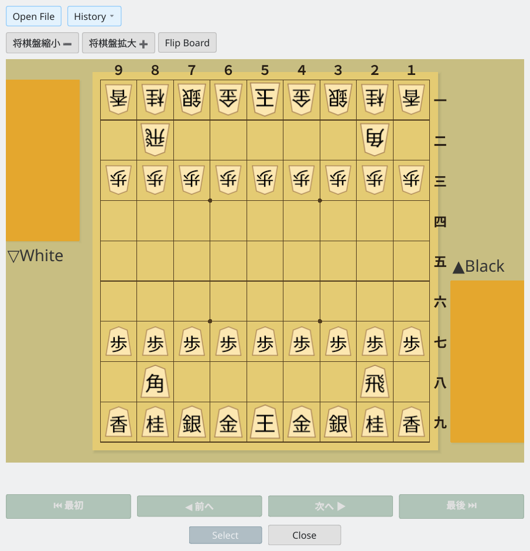
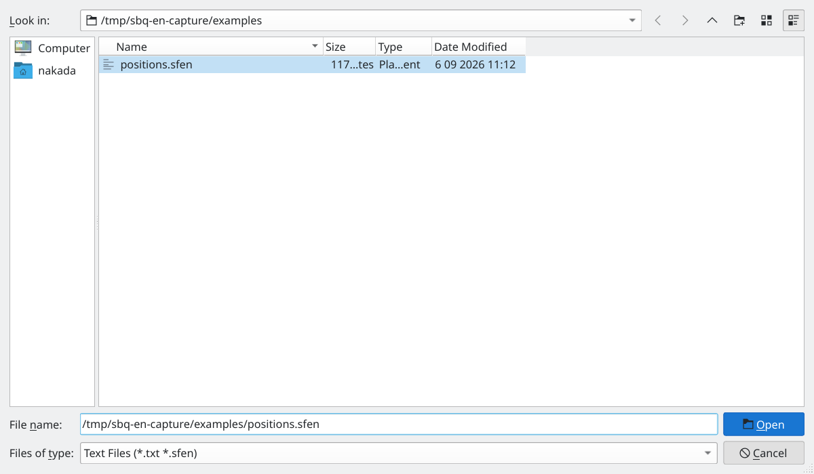
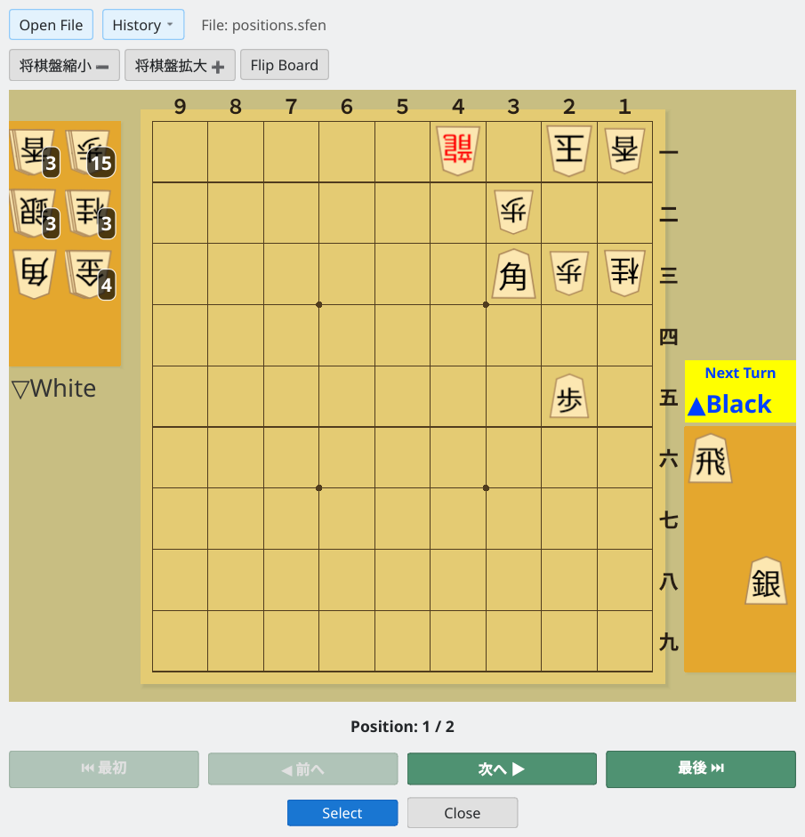
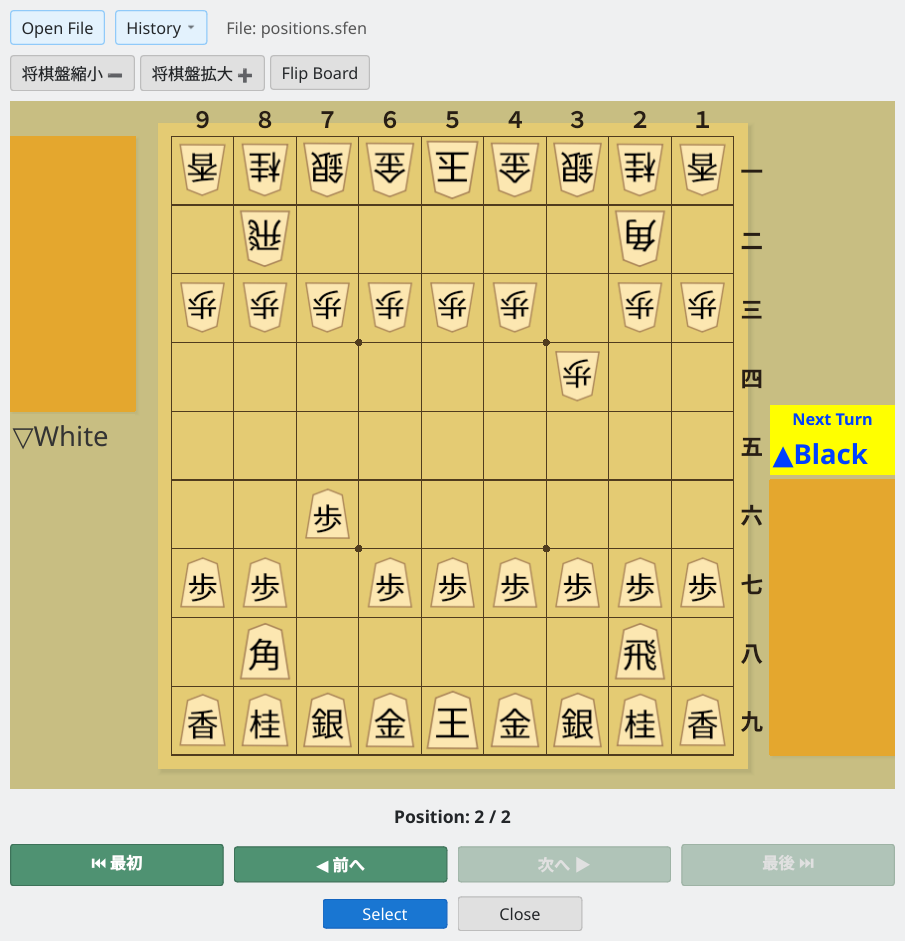
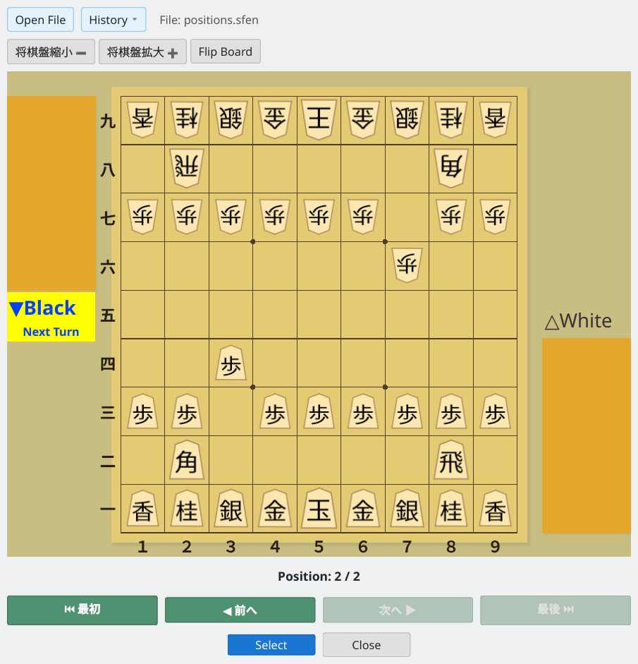
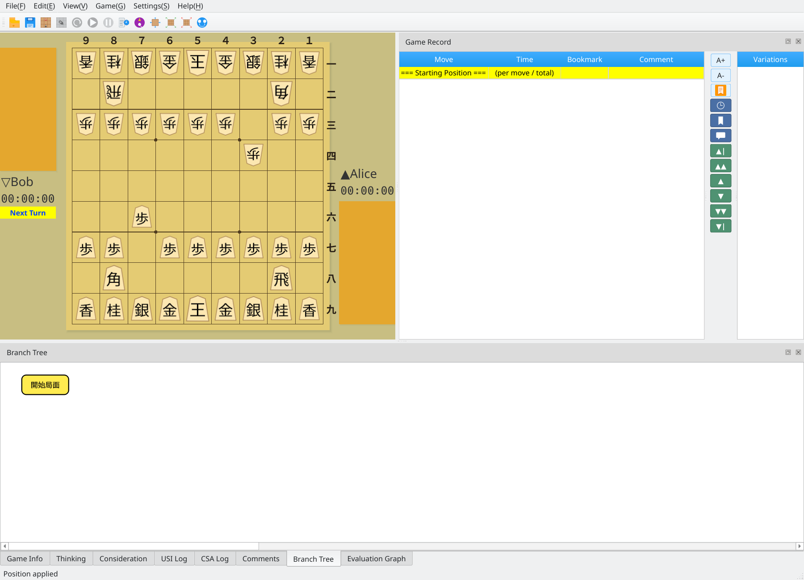

Browse, select, and import SFEN positions
Screenshots were captured on Linux with the English interface.
Prepare a text file in SFEN format
The position collection viewer reads text files containing one SFEN position string per line.
5+r1kl/6p2/6Bpn/9/7P1/9/9/9/9 b RSb4g3s3n3l15p 1
lnsgkgsnl/1r5b1/pppppp1pp/6p2/9/2P6/PP1PPPPPP/1B5R1/LNSGKGSNL b - 3SFEN collection file: one position string per line
Navigate through positions in the collection viewer
Choose Edit → SFEN Collection Viewer. The viewer initially shows the standard starting position.

Position collection viewer: initial state
Click Open File to select and load an SFEN position collection.

File selection dialog: choose an SFEN position collection
After loading, the first position appears on the board, including pieces in hand and the side to move. The current position number and total number of positions appear at the bottom.

Collection loaded: the first position on the board (position 1 / 2)
Use First, Previous, Next, and Last to move through the collection. Click Next to advance to the next position.

Next position: navigate through the collection (position 2 / 2)
Click Rotate Board to turn the board 180 degrees and view the position from White's side.

Rotated board: view the position from White's perspective
Import the selected position into the main window
Display the position you want and click Select to import it into the main window. You can then begin study or analysis from that position.

Imported into the main window: ready for study and analysis